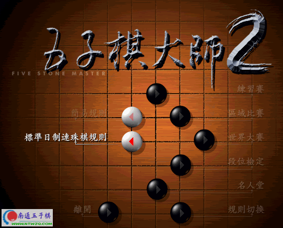
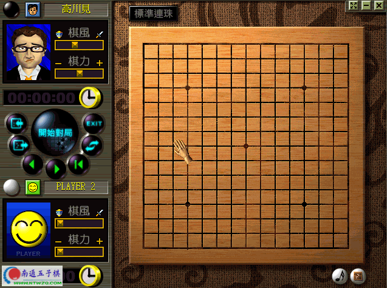
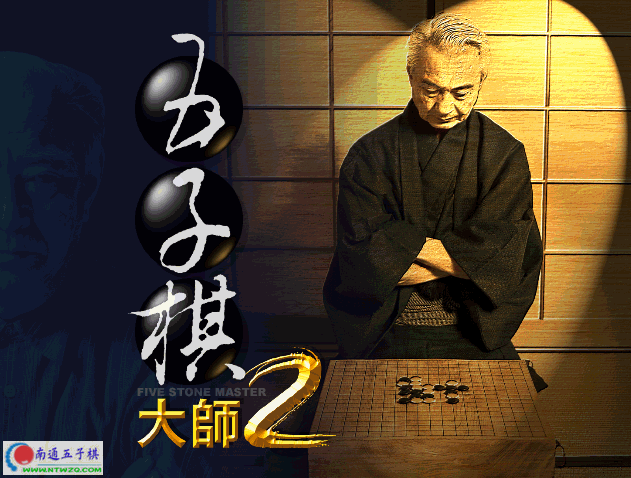

五子棋大师2〔本站下载〕
#1 五子棋大师2〔本站下载〕 作者：有志青年 发表时间：2006-4-5 13:00:14
之前帖子中的程序为逝水连珠所上传的文件，时常不够稳定〔时好时坏〕，有好几个网友反应了这个问题。
现新开一帖，此贴中的附件在我们自己的空间。
文件截图：



［ 1 于 2012-1-7 19:56:22 时花20金币送鲜花一朵］
#2 Re:五子棋大师2〔本站下载〕有理没钱末进来 作者：风过无痕 发表时间：2006-4-10 14:35:26
期待五子棋大师2的光盘版本#3 Re:五子棋大师2〔本站下载〕有理没钱末进来 作者：林雨 发表时间：2006-5-27 0:38:08
比秒手的domini强吗？？？#4 Re:五子棋大师2〔本站下载〕有理没钱末进来 作者：御风 发表时间：2006-7-21 11:49:57
看看先
#5 Re:五子棋大师2〔本站下载〕有理没钱末进来 作者：酒鬼 发表时间：2006-9-4 18:01:20
我也有一个和你一样的大版本，不知道是不是一样，用的时候有时好死机，现在很少用了，谁有光盘版的，听说有200M大小呢？#6 Re:五子棋大师2〔本站下载〕有理没钱末进来 作者：酒鬼 发表时间：2006-9-4 18:03:48
要上传会和你的有冲突吗？不知道合适不合适，反正我用的时候死机，是不我机子的问题，配置太低了…………………………55555555555#7 Re:五子棋大师2〔本站下载〕有理没钱末进来 作者：飞鸟 发表时间：2006-11-11 22:34:25
好强哦#8 Re:五子棋大师2〔本站下载〕 作者：天才 发表时间：2007-2-22 19:21:29
这怎么用啊! 里面很多都是没存档的 没法和大师对局
#9 Re:五子棋大师2〔本站下载〕 作者：古董 发表时间：2007-2-23 16:43:53
好东西谢谢！！！！！！！11#10 Re:五子棋大师2〔本站下载〕 作者：news 发表时间：2007-3-7 1:00:56
支持一下。
这里做的是最完美的。有志的辛苦大家都看在眼里了
#11 Re:五子棋大师2〔本站下载〕 作者：onetwo 发表时间：2007-3-12 0:24:08
好好学习,天天向上#12 Re:五子棋大师2〔本站下载〕 作者：awreq 发表时间：2007-3-23 11:49:14
太好了！！！！#13 Re:五子棋大师2〔本站下载〕 作者：mlswc2 发表时间：2007-4-1 18:36:22
不管好不好先谢谢有志年青了
#14 Re:五子棋大师2〔本站下载〕 作者：maerha 发表时间：2007-4-3 12:23:49
NB#15 Re:五子棋大师2〔本站下载〕 作者：小兵 发表时间：2007-4-8 13:46:11
很强的!!!
#16 Re:五子棋大师2〔本站下载〕 作者：小不 发表时间：2007-4-8 15:33:16
试试看#17 Re:五子棋大师2〔本站下载〕 作者：缘深似浅 发表时间：2007-4-20 19:57:43
感谢分享下载
#18 Re:五子棋大师2〔本站下载〕 作者：不落的太阳 发表时间：2007-5-2 13:39:09
谢谢
#19 Re:五子棋大师2〔本站下载〕 作者：LKJHGF 发表时间：2007-6-10 17:25:55
下下看看。我有光盘，但有200m。比较一下告诉大家#20 Re:五子棋大师2〔本站下载〕 作者：sknigh 发表时间：2007-7-14 18:30:50
支持一下。
这里做的是最完美的。有志的辛苦大家都看在眼里了
#21 Re:五子棋大师2〔本站下载〕 作者：黄药师 发表时间：2007-7-14 19:44:32
太大了～～和黑石比有什么优势吗？#22 Re:五子棋大师2〔本站下载〕 作者：小笨蛋 发表时间：2007-8-10 2:43:34
哪里?#23 Re:五子棋大师2〔本站下载〕 作者：吾本沉默 发表时间：2007-8-11 9:20:15
这个软件我早有了。谢谢。挺不错的。#24 Re:五子棋大师2〔本站下载〕 作者：donfen 发表时间：2007-8-14 11:51:07
超难的
#25 Re:五子棋大师2〔本站下载〕 作者：残月晓风 发表时间：2007-8-15 10:44:29
看看~~~~#26 Re:五子棋大师2〔本站下载〕 作者：whchin 发表时间：2007-8-18 0:43:16
好东西
谢谢了
#27 Re:五子棋大师2〔本站下载〕 作者：白如云 发表时间：2007-8-26 1:03:55
辛苦了 为广大爱好棋友做出的贡献
到处都是收费的
#28 Re:五子棋大师2〔本站下载〕 作者：ymxbnu 发表时间：2007-8-26 14:35:31
3q,lz#29 Re:五子棋大师2〔本站下载〕 作者：ziheng 发表时间：2007-8-28 22:06:56
；好东西
#30 Re:五子棋大师2〔本站下载〕 作者：飒啦啦 发表时间：2007-8-30 13:28:30
好多好东西，不过就是下载有点慢。等#31 Re:五子棋大师2〔本站下载〕 作者：醉轩听雨 发表时间：2007-8-31 10:03:52
好东东下了。#32 Re:五子棋大师2〔本站下载〕 作者：吴广德 发表时间：2007-9-6 12:17:42
下载练习，谢谢#33 Re:五子棋大师2〔本站下载〕 作者：kuakua 发表时间：2007-9-6 13:31:39
想看#34 Re:五子棋大师2〔本站下载〕 作者：kuakua 发表时间：2007-9-6 13:39:04

#35 Re:五子棋大师2〔本站下载〕 作者：uranus 发表时间：2007-9-10 22:55:05
好软件!
#36 Re:五子棋大师2〔本站下载〕 作者：叶子 发表时间：2007-9-11 12:50:06
下载中~~~#37 Re:五子棋大师2〔本站下载〕 作者：liugua 发表时间：2007-9-23 23:04:53
taihaole
dsfdskajdksl;agjsklajgklsd;agj
#38 Re:五子棋大师2〔本站下载〕 作者：shak47 发表时间：2007-9-28 18:43:17
什么东西呢? 下下来看看#39 Re:五子棋大师2〔本站下载〕 作者：itover 发表时间：2007-9-28 23:46:22
谢谢楼主，楼主辛苦了。
#40 Re:五子棋大师2〔本站下载〕 作者：见证爱情 发表时间：2007-10-1 20:08:57
2121212121#41 Re:五子棋大师2〔本站下载〕 作者：庭小 发表时间：2007-10-2 17:06:11
谢谢了#42 Re:五子棋大师2〔本站下载〕 作者：yjr123 发表时间：2007-10-7 8:39:12
呵呵，可以去掉了一个垃圾文件，这样体积就会小很多，打包后约13M。#43 Re:五子棋大师2〔本站下载〕 作者：从小大脑子 发表时间：2007-10-18 13:58:12
真的十分感谢楼主的共享，谢谢#44 Re:Re:五子棋大师2〔本站下载〕 作者：caodab 发表时间：2007-11-8 9:05:35
dddddddddddddd#45 Re:五子棋大师2〔本站下载〕 作者：极致赏美 发表时间：2007-11-13 12:06:07
玩过一代,好厉害.
谢谢
#46 Re:五子棋大师2〔本站下载〕 作者：川东响马 发表时间：2007-11-16 23:53:50
我新来的,看来这里很好,今后要常来看看了.#47 Re:五子棋大师2〔本站下载〕 作者：gailuo 发表时间：2007-11-18 17:26:02
终于找到了
#48 Re:五子棋大师2〔本站下载〕 作者：小菜~ 发表时间：2007-11-19 1:48:39
很强呢~~下不赢....#49 Re:Re:五子棋大师2〔本站下载〕 作者：bbba 发表时间：2007-11-24 20:12:52
b zd zm yang#50 Re:五子棋大师2〔本站下载〕 作者：无敌木木 发表时间：2007-12-2 13:54:01
听说不错的 ~下来看看#51 Re:五子棋大师2〔本站下载〕 作者：无敌木木 发表时间：2007-12-2 14:00:15
怎么没见插件啊~#52 Re:五子棋大师2〔本站下载〕 作者：极致赏美 发表时间：2008-1-5 21:37:01
谢谢！谢谢！
#53 Re:五子棋大师2〔本站下载〕 作者：欧乙平 发表时间：2008-3-16 8:29:33
是吗？那就找找撒！
#54 Re:五子棋大师2〔本站下载〕 作者：秘密 发表时间：2008-5-9 16:58:10
谢谢分享
感谢版主用心
#55 Re:五子棋大师2〔本站下载〕 作者：悠闲 发表时间：2008-6-14 18:56:45
谢谢分享！确实不错！#56 Re:五子棋大师2〔本站下载〕 作者：隐身 发表时间：2008-6-25 22:16:13
下来看看也#57 Re:五子棋大师2〔本站下载〕 作者：五子冰 发表时间：2008-7-9 18:10:39
以前用过。
比较可恶的是此软件会自动更改屏幕刷新频率。
#58 Re:五子棋大师2〔本站下载〕 作者：有鱼咱就乐 发表时间：2008-7-10 22:47:57
正在下载 看看了 先谢了#59 Re:五子棋大师2〔本站下载〕 作者：怪怪 发表时间：2008-7-13 15:33:27
太强了~~~真不错#60 Re:五子棋大师2〔本站下载〕 作者：越狱行辕 发表时间：2008-10-19 23:52:42
 才发现怎么这么大！！！
才发现怎么这么大！！！
#61 Re:五子棋大师2〔本站下载〕 作者：圣龙天使 发表时间：2008-10-24 16:33:38
这东西怎么存盘啊#62 Re:五子棋大师2〔本站下载〕 作者：文渊 发表时间：2008-11-7 9:14:46
我用过的最好的五子棋软件了 ~！谢谢啦~！#63 Re:五子棋大师2〔本站下载〕 作者：痴迷五子棋 发表时间：2008-11-12 2:07:33
好喜欢这个软件啊
#64 Re:五子棋大师2〔本站下载〕 作者：沙漠中的骆驼 发表时间：2008-11-21 16:58:25
上路虾米请教大师：
在“段位检定”中，在过了第六段（8分）并且存档的情况下，当再次打开时怎样才能接着上次的存档挑战第五段啊？
请大师和同样爱好五子棋的朋友 告诉玩法。谢谢！
告诉玩法。谢谢！
#65 Re:五子棋大师2〔本站下载〕 作者：沙漠中的骆驼 发表时间：2008-11-21 17:20:24
请教大师: 在上面的“段位鉴定”游戏中，
当过了第六关并且存档成功后，下次再打开游戏想接着挑战第五关，应该怎样具体操作啊？
我费了好大劲才以8分过了第六关，可当打开再接着玩时却还是第六关啊？！
请大师或各位爱好五子棋的朋友告诉我此软件的用法。谢谢（我玩的是下载后的单机游戏）。
#66 Re:五子棋大师2〔本站下载〕 作者：沙漠中的骆驼 发表时间：2008-11-22 10:25:29
呵呵，昨晚又重新玩了一次，
当过了第六关后接着玩第五关，第五关得了2分没有通过。
有趣的是：出现了一张“证书”的图片。呵呵，有趣！
可上面提出的问题依然没有得到解决，是不是每次都得从第六关一层一层向上升啊？等待答案。
#67 Re:五子棋大师2〔本站下载〕 作者：齐飞 发表时间：2008-11-30 23:25:27
五子棋大师2最高级和Fiver 6.8的domini比，谁厉害？#68 Re:五子棋大师2〔本站下载〕 作者：五五子情 发表时间：2008-12-17 16:03:39
谢谢
#69 Re:五子棋大师2〔本站下载〕 作者：古麦 发表时间：2009-1-20 10:48:21
谢谢分享，已收藏！#70 Re:五子棋大师2〔本站下载〕 作者：天之圣使 发表时间：2009-2-15 19:03:31
哦好了我 知道了~#71 Re:五子棋大师2〔本站下载〕 作者：天之圣使 发表时间：2009-2-17 19:38:32
看看下下玩玩#72 Re:五子棋大师2〔本站下载〕 作者：天之圣使 发表时间：2009-2-20 19:57:30
下了2小时才赢5次 ~#73 Re:五子棋大师2〔本站下载〕 作者：超级菜鸟徒弟 发表时间：2009-3-3 13:28:30
这家伙太厉害了，我是下不过他
#74 Re:五子棋大师2〔本站下载〕 作者：烟淡水云间 发表时间：2009-4-26 13:25:35
是个好东西，谢谢
#75 Re:五子棋大师2〔本站下载〕 作者：紫月 发表时间：2009-4-26 23:28:00
谢谢楼主#76 Re:五子棋大师2〔本站下载〕 作者：盖世英雄 发表时间：2009-4-27 0:23:38
太感动了 谢谢了 真心感谢#77 Re:五子棋大师2〔本站下载〕 作者：失落的艾洛君 发表时间：2009-5-2 13:57:45
留名
#78 Re:五子棋大师2〔本站下载〕 作者：爱下不下 发表时间：2009-5-14 17:07:40
这个软件好象有点耍赖哦，我想看看黑石3.7跟它谁厉害，下了几步后，它就开始耍赖，我点东，它下西，就是不按照黑石下的点下（我是在同一台电脑上开的）。
哪位软件达人知道这是怎么回事情哟？
#79 Re:五子棋大师2〔本站下载〕 作者：英雄九段 发表时间：2009-5-15 1:06:31
支持一下
这里做的是最完美的。有志的辛苦大家都看在眼里了
#80 Re:五子棋大师2〔本站下载〕 作者：解放者 发表时间：2009-5-21 12:00:36
高川见，徐二打，杀手明这些世界级棋手太难对付了。
执白基本上赢不了。
#81 Re:五子棋大师2〔本站下载〕 作者：随风飘逸东东 发表时间：2009-8-15 0:49:35
非常期待，希望不会死机
#82 Re:五子棋大师2〔本站下载〕 作者：小刚小英 发表时间：2009-8-15 10:59:24
我顶
#83 Re:五子棋大师2〔本站下载〕 作者：武汉荆楚情 发表时间：2009-8-15 17:27:13
顶个，正好看看软件的实力如何！#84 Re:五子棋大师2〔本站下载〕 作者：xr__ 发表时间：2009-8-23 16:56:35
能修改开局库否？#85 Re:五子棋大师2〔本站下载〕 作者：游剑江湖 发表时间：2009-9-12 18:18:03
好！谢谢#86 Re:五子棋大师2〔本站下载〕 作者：池边小舒 发表时间：2009-9-26 14:16:38
怎麽全是说好的帖子，却没说出五子棋大师2比黑石好在哪里?期待中。。。#87 Re:五子棋大师2〔本站下载〕 作者：最终奥义杀无赦 发表时间：2009-9-29 14:54:42
强啊，俺的神呀，太合俺的胃口了，#88 Re:五子棋大师2〔本站下载〕 作者：難得糊塗 发表时间：2009-12-14 13:30:07
為何早上下載速度非常慢
是壞掉了嗎
還是說要半夜沒人
下載比較快
#89 Re:五子棋大师2〔本站下载〕 作者：不会玩 发表时间：2010-5-11 19:19:55
只不过不能悔棋，下的郁闷#90 Re:五子棋大师2〔本站下载〕 作者：龙小小 发表时间：2010-5-11 20:16:27
#91 Re:五子棋大师2〔本站下载〕 作者：极品商人 发表时间：2010-5-30 12:01:51
这个版本怎么样？不知道能不能用，是免费还是？
#92 Re:五子棋大师2〔本站下载〕 作者：励 发表时间：2010-6-6 20:19:33
的确是啊，，有志青年，辛苦了，#93 Re:五子棋大师2〔本站下载〕 作者：夜雨凌薇 发表时间：2010-6-29 15:32:40
谢谢分享。O(∩_∩)O~
#94 Re:五子棋大师2〔本站下载〕 作者：岑小鱼 发表时间：2010-6-29 18:28:25
记得大概是99年 同学买了个大师2的光碟本来要给他弟弟玩 结果被我发现后抢了过来
不过当时没买电脑 跑去表哥家看 可能是老爷机吧 跑了20分钟没个反应 汗死
#95 Re:五子棋大师2〔本站下载〕 作者：五子棋落 发表时间：2010-7-1 11:14:08
   <A style="CURSOR: hand" onclick="/open('Friend.asp?menu=Post&incept=天才','','width=320,height=170')"> <A style="CURSOR: hand" onclick="/open('Friend.asp?menu=Post&incept=天才','','width=320,height=170')">     |
No.8 | |
|
|
||
|
Re:五子棋大师2〔本站下载〕
这怎么用啊! 里面很多都是没存档的 没法和大师对局 |
||
#96 Re:五子棋大师2〔本站下载〕 作者：杨巧 发表时间：2010-8-6 15:38:57
徐徐vvv 大师 455555555555#97 Re:五子棋大师2〔本站下载〕 作者：人更 发表时间：2010-9-22 9:15:16
希望是绿色的。 谢谢分享啦~#98 Re:五子棋大师2〔本站下载〕 作者：杨巧 发表时间：2010-10-7 16:06:48
的赌东道赌东道赌东道的#99 Re:五子棋大师2〔本站下载〕 作者：雪儿飘飘 发表时间：2010-10-7 16:26:24
上次下了一个。不会用啊#100 Re:五子棋大师2〔本站下载〕 作者：王小 发表时间：2010-10-9 10:52:58
下的好慢哦！#101 Re:五子棋大师2〔本站下载〕 作者：杨巧 发表时间：2010-10-9 14:55:15
没奈何鸡冠花鸡冠花后#102 Re:五子棋大师2〔本站下载〕 作者：巫山云雨 发表时间：2010-10-19 15:01:57
呵呵支持一下不错的软件 以前对弈过#103 Re:五子棋大师2〔本站下载〕 作者：梦之翼 发表时间：2010-10-31 6:47:49
请问：有没有五手两打资料。有最新版本更好。谢谢！#104 Re:五子棋大师2〔本站下载〕 作者：杨巧 发表时间：2011-1-11 14:17:16
撒发生法#105 Re:五子棋大师2〔本站下载〕 作者：杨巧 发表时间：2011-1-20 21:31:19
rtujrtjgfjgjgjg#106 Re:五子棋大师2〔本站下载〕 作者：杨巧 发表时间：2011-1-20 21:31:55
hijkghkhg#107 Re:五子棋大师2〔本站下载〕 作者：洪城骄子 发表时间：2011-5-12 13:16:21
先收藏，谢谢楼主。#108 Re:五子棋大师2〔本站下载〕 作者：蒋征 发表时间：2011-6-3 0:40:53
还有更难得吗#109 Re:五子棋大师2〔本站下载〕 作者：慕容丨逸灬飞扬 发表时间：2011-7-13 18:16:05
大拇指！
厉害！跟TA下，调到最高难度的时候我只能偶尔用大优开局才能下过TA。
#110 Re:五子棋大师2〔本站下载〕 作者：佛心诚 发表时间：2011-9-15 23:45:05
做的还不错，就是比黑石差点。而且黑石才0.5M不到#111 Re:五子棋大师2〔本站下载〕 作者：黑豆 发表时间：2012-1-4 21:48:47
谢谢,正需要.#112 Re:五子棋大师2〔本站下载〕 作者：品味 发表时间：2012-1-24 22:51:11
嘿嘿刚刚下了个，还没用呢#113 Re:五子棋大师2〔本站下载〕 作者：爱因思谈 发表时间：2012-5-5 17:59:25
东西是好了，水平也不错，不过感觉就是电脑老是走一打必胜点，还有就是本软件在电脑上面运行使用的时候鼠标有点不对位，不知道是不是对电脑配置有要求，我的就是这样咯！#114 Re:有志青年【==五子棋大师2〔本站下载〕==】 作者：大小大 发表时间：2012-7-14 9:16:16
lz真心好人，昨天刚来论坛，看了好多好贴都是lz的，都很有用，相当感激
#115 Re:五子棋大师2〔本站下载〕 作者：雪之殇 发表时间：2012-9-26 11:59:29
这个下了怎么用啊？我怎么没找到打开五子棋的图标啊#116 Re:五子棋大师2〔本站下载〕 作者：golgyy 发表时间：2013-1-18 14:27:10
这个老家伙太厉害了，我砍不动#117 Re:五子棋大师2〔本站下载〕 作者：秦时明月汉时关 发表时间：2013-3-28 11:42:33
听说很厉害，下载下来 谢谢楼主#118 Re:五子棋大师2〔本站下载〕 作者：秦时明月汉时关 发表时间：2013-4-13 16:06:23
很厉害啊~·`谢谢楼主#119 Re:五子棋大师2〔本站下载〕 作者：李力 发表时间：2013-12-15 22:54:00
下过，好用，就是会死机#120 Re:五子棋大师2〔本站下载〕 作者：哥哥哥哥三二一 发表时间：2014-1-15 7:29:22
 此软件，有禁到无禁，世界大赛全部14分完虐~~~~
此软件，有禁到无禁，世界大赛全部14分完虐~~~~
段位最高到6段
炫耀完毕~~我速侧~~~
#121 Re:五子棋大师2〔本站下载〕 作者：偷鸡贼 发表时间：2014-11-13 0:25:17
很喜欢，嘿嘿😍